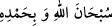

anlamadılar ve onun yaratana delâlet ettiğini araştırmadılar.
“O, halîmdir,” Bu sebepledir ki siz Allah’a delâlet eden şeyleri düşünmekten yüz
çevirdiğiniz ve şirk içinde boğulduğunuz halde sizi cezâlandırmakta acele etmedi. Hilm,
Allah’a nisbet edildiğinde zâlimin cezasını geciktirmek, te’hir etmek; insanlara nisbet
edildiğinde ise gadab anında mutmain ve nefsine hâkim olmaktır.
Sizden tevbe eden ve tevhide dönenleri “bağışlayıcıdır.” Zemahşeri, Beyzâvî,
Ebüssuûd ve onları tâkip eden zâhir ehli âlimlerin görüşü ve yorumu budur. Onlar tek
göze ve tek kulağa sahip olanlardır.
Şeyh Ali Semerkandî Bahru’l-ulûm’da şöyle der: Selef-i sâlihin âyette iki yerde
zikredilen tesbîhin hakîkate hamledilmesi görüşündedirler. En doğru olan da budur.
Çünkü cansız varlıkların konuştukları kabul ediliyorsa, aynı şekilde tesbihlerinin olduğu
da kabul edilmelidir.
Rasûlullah (s.a.): “Şüphesiz ki ben Mekke’de bir taş biliyorum, o bana peygamber
olarak gönderilmeden önce selam verirdi. Ben onu şu an biliyorum.”[92] buyurmuştur.
İbn Mes’ûd (r.a.)’ın “Yemin ederim ki biz yiyeceklerin, yenilirken tesbih ettiğini
duyardık.” dediği rivâyet edilmiştir. Uzuvların ve derilerin şâhidlik yapacakları
Kur’an’da zikredilmiştir.
İbn Abbâs (r.anhümâ) “Biz dağları onunla beraber (tesbih etmeleri için) boyun
eğdirmiştik; akşam sabah onunla tesbih ederlerdi.” (Sâd, 38/18) âyeti hakkında
şöyle demiştir: Dâvud (a.s.) Allah’ı “
Sübhânallahi ve bihamdihi”
diyerek tesbih ettiğinde dağlar da tesbihte bulunarak ona cevap verirlerdi.”
Mücâhid, de şöyle demiştir: “Canlı olsun cansız olsun eşyanın hepsi Allah’ı tesbih
eder. Onların tesbihi ise “Sübhânallahi ve bi-hamdihî = Hamd ederek Allah’ı tesbih
ederim.”dir.”
Mikdâd b. Ma‘dîkerib’den nakledilmiştir: Toprak ıslanmadığı müddetçe tesbih eder.
Kavun karpuz yerinden kaldırılmadığı sürece Allah’ı tesbih eder. Yaprak ağaçta kaldığı,
su aktığı, elbise yeni kaldığı müddetçe Allah’ı tesbih eder. Elbise kirlenince tesbihi
bırakır. Vahşi hayvanlar ve kuşlar bağırdıkları zaman tesbih ederler, sustuklarında
tesbîhi bırakırlar.
Medârik tefsirinde zikredildiğine göre bir hadiste “Denizdeki bir balık veya havada
uçan bir kuş Allah’ı tesbihi terk etmeleri sebebiyle avlanırlar.”[93] buyrulmuştur.
Nehaî: “Canlı ve cansız her şey Allah’a hamd ederek tesbih ederler. Hatta kapının
gıcırtısı, çatının uğultusu bile.” demiştir. İkrime: “Ağaç tesbih eder, fakat direk tesbih
etmez. Ağaç ve bitkiler kesildiklerinde kuruyuncaya kadar tesbih ederler.” demiştir. el-
Kevâşî’de şöyle der: “Bu aklen ve kudreten mümkündür.”
el-Hulâsâ’nın Cenâiz bahsinde: “İhtiyaç olmadığı halde kabir üzerindeki odunları ve
yaş otları kesmek mekruhtur. Çünkü onlar Allah’ı tesbih eder.” denilmiştir.
el-Mültekat’ta der ki: Hiçbir izi kalmamış eski bir kabir dahi olsa insanların ondan
faydalanması, orada bina yapması ve hayvanlarını otlamak için göndermesi câiz olmaz.”